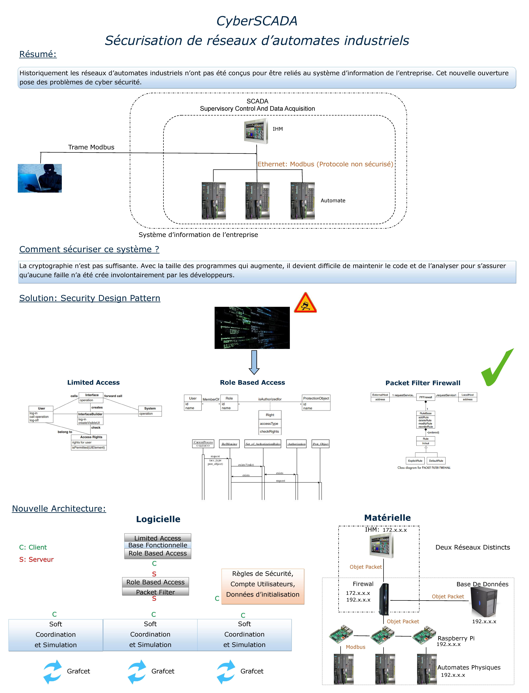

CE QUI SE CONÇOIT BIEN S'ÉNONCE CLAIREMENT ET LES MOTS POUR LE DIRE VIENNENT AISÉMENT
Quand le projet vit arriver son échéance, il fallut synthétiser le travail accompli en une image, un poster. Ce fut chose faite. Ce qui en résulta laissa bon nombre de personnes dubitatives, au point qu'on s'empressa d'émettre une seconde version du poster. Mais cette seconde version s'égara des mémoires et on n'a conservé aujourd'hui que la version initiale, avec ses tares et ses défauts. Malgré tout, il n'est personne pour nier la fraîcheur et la pureté qui en émane.

⁂
Le saviez-vous ?
Le poster servira d'affiche au biopic CyberSCADA qui retracera la formidable histoire de ce projet hors du commun.
Le poster a été imprimé sur un morceau inutilisé des tapisseries de Bayeux.
Si son exécution est clairement post-moderne, le poster puise ses inspirations dans la Renaissance italienne.
Beati pauperes spiritu.
⁂
Voir aussi
La naissance d'un mème
Le soleil vient de se lever !
Parlons couilles mais parlons bien
[ Accueil ]